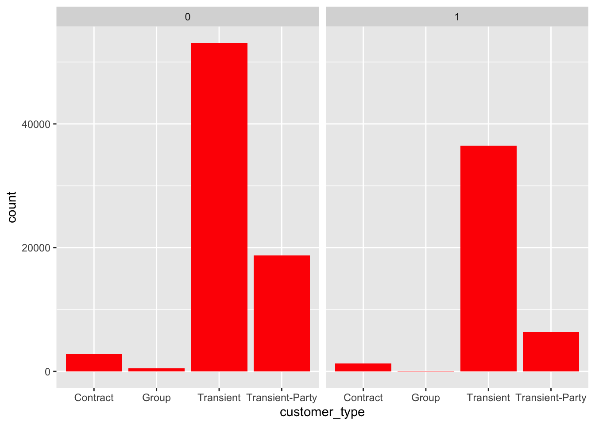
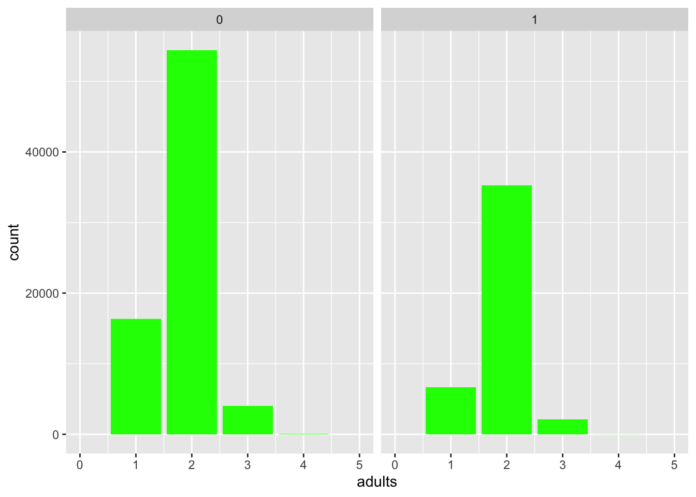
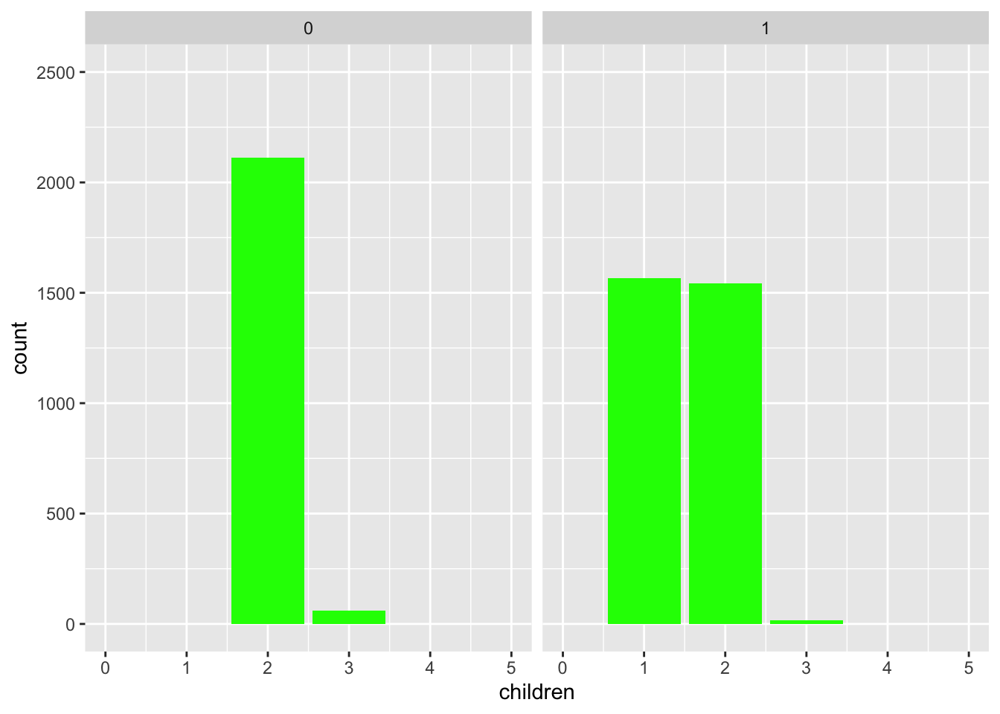
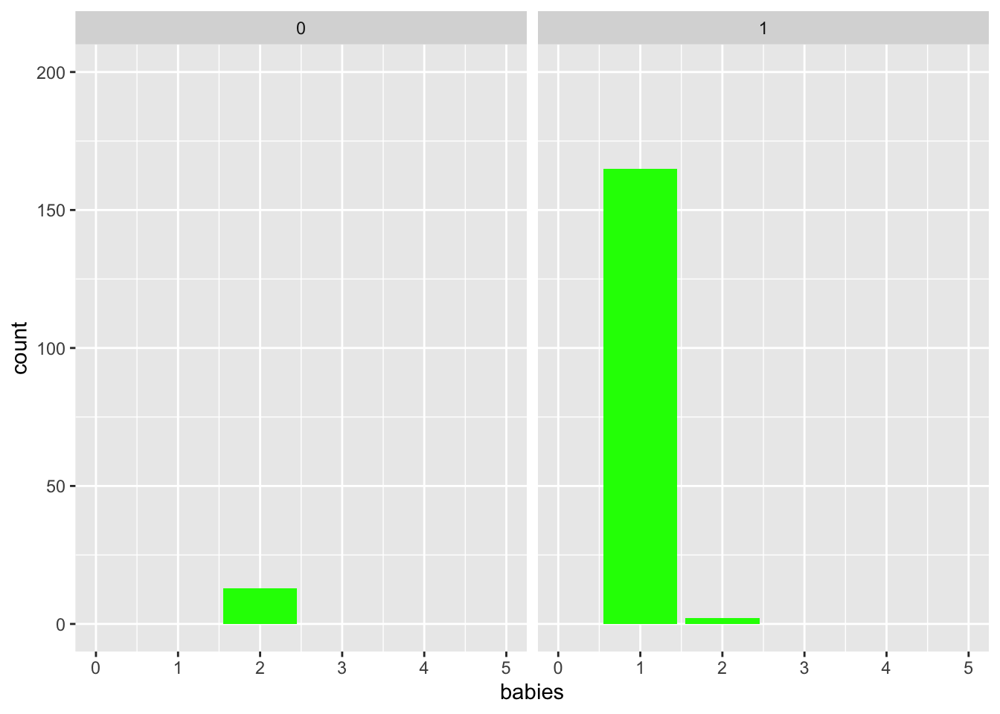

library(tidyverse) # for graphing and data cleaning
library(tidymodels) # for modeling
library(naniar) # for analyzing missing values
library(vip) # for variable importance plots
library(glmnet) # for regularized regression, including LASSO
theme_set(theme_minimal())
hotels <- readr::read_csv('https://raw.githubusercontent.com/rfordatascience/tidytuesday/master/data/2020/2020-02-11/hotels.csv')
Setting Up Git and Github in RStudio
Here is my Github link.
Creating a Website
- Website Link
- Here is the link to my website.
Machine Learning review and intro to tidymodels
- Read about the hotel booking data,
hotels, on the Tidy Tuesday page it came from. There is also a link to an article from the original authors. The outcome we will be predicting is called is_canceled.
- Without doing any analysis, what are some variables you think might be predictive and why?
- There are a few variables that could be predictive, however
previous_cancellations definitely stands out. It is reasonable to assume that if someone has canceled before, they could possiblky cancel again. booking_changes could also be predictive, as someone who makes a bunch of changes is likely to be unsure about their booking and one of the changes that they could make could be canceling the stay. Finally, a third variable that could be predictive is customer_type, as the type of customer could make it easier or more difficult to cancel the stay.
- What are some problems that might exist with the data? You might think about how it was collected and who did the collecting.
- One issue with the way that the data was collected is that there are almost twice as many observations for the city hotel as the resort hotel, which could introduce bias into the data. The data for canceled bookings could also be less accurate, as variables such as adults, children, and babies could be inaccurate due to the family or group never showing up. Therefore, there could be bias towards non-canceled bookings based on how the data was collected.
- If we construct a model, what type of conclusions will be able to draw from it?
- If we construct a model, the type of conclusions that we’ll be able to draw from it are likely to be which variables are most important to determine the likelihood of cancellation. This could easily be achieved using the LASSO technique to analyze variable importance.
- Create some exploratory plots or table summaries of the data, concentrating most on relationships with the response variable. Keep in mind the response variable is numeric, 0 or 1. You may want to make it categorical (you also may not). Be sure to also examine missing values or other interesting values.
hotels %>%
ggplot(aes(x = hotel)) +
geom_bar(fill = "blue") +
facet_wrap(vars(is_canceled))
hotels %>%
ggplot(aes(x = customer_type)) +
geom_bar(fill = "red") +
facet_wrap(vars(is_canceled))

hotels %>%
ggplot(aes(x = previous_cancellations)) +
geom_bar(fill = "orange") +
xlim(0,3) +
ylim(0,7000) +
facet_wrap(vars(is_canceled))
## Warning: Removed 252 rows containing non-finite values (stat_count).
## Warning: Removed 4 rows containing missing values (geom_bar).
hotels %>%
ggplot(aes(x = adults)) +
geom_bar(fill = "green") +
xlim(0,5) +
facet_wrap(vars(is_canceled))
## Warning: Removed 14 rows containing non-finite values (stat_count).
## Warning: Removed 3 rows containing missing values (geom_bar).

hotels %>%
ggplot(aes(x = children)) +
geom_bar(fill = "green") +
xlim(0,5) +
ylim(0,2500) +
facet_wrap(vars(is_canceled))
## Warning: Removed 5 rows containing non-finite values (stat_count).
## Warning: Removed 3 rows containing missing values (geom_bar).

hotels %>%
ggplot(aes(x = babies)) +
geom_bar(fill = "green") +
xlim(0,5) +
ylim(0,200) +
facet_wrap(vars(is_canceled))
## Warning: Removed 2 rows containing non-finite values (stat_count).
## Warning: Removed 3 rows containing missing values (geom_bar).

- First, we will do a couple things to get the data ready, including making the outcome a factor (needs to be that way for logistic regression), removing the year variable and some reservation status variables, and removing missing values (not NULLs but true missing values). Split the data into a training and test set, stratifying on the outcome variable,
is_canceled. Since we have a lot of data, we’re going to split the data 50/50 between training and test. I have already set.seed() for you. Be sure to use hotels_mod in the splitting.
hotels_mod <- hotels %>%
mutate(is_canceled = as.factor(is_canceled)) %>%
mutate(across(where(is.character), as.factor)) %>%
select(-arrival_date_year,
-reservation_status,
-reservation_status_date) %>%
add_n_miss() %>%
filter(n_miss_all == 0) %>%
select(-n_miss_all)
set.seed(494)
hotel_split <- initial_split(hotels_mod,
prop = 0.5)
hotel_train <- training(hotel_split)
hotel_test <- testing(hotel_split)
- Pre-processing
hotel_recipe <- recipe(is_canceled ~.,
data = hotel_train) %>%
step_mutate(children = case_when(
children > 0 ~ 1,
children == 0 ~ 0
),
babies = case_when(
babies > 0 ~ 1,
babies == 0 ~ 0
),
previous_cancelations = case_when(
previous_cancelations > 0 ~ 1,
previous_cancelations == 0 ~ 0
)
) %>%
step_mutate(agent = case_when(
agent == NULL ~ 1,
agent != NULL ~ 0
),
company = case_when(
company == NULL ~ 1,
company != NULL ~ 0
)
)
LS0tCnRpdGxlOiAnQXNzaWdubWVudCAjMScKb3V0cHV0OiAKICBodG1sX2RvY3VtZW50OgogICAgdG9jOiB0cnVlCiAgICB0b2NfZmxvYXQ6IHRydWUKICAgIGRmX3ByaW50OiBwYWdlZAogICAgY29kZV9kb3dubG9hZDogdHJ1ZQotLS0KCmBgYHtyIHNldHVwLCBpbmNsdWRlPUZBTFNFfQoja25pdHI6Om9wdHNfY2h1bmskc2V0KGVjaG8gPSBUUlVFLCBtZXNzYWdlPUZBTFNFLCB3YXJuaW5nPUZBTFNFKQpgYGAKCmBgYHtyIGxpYnJhcmllcywgbWVzc2FnZT1GQUxTRSwgd2FybmluZz1GQUxTRX0KbGlicmFyeSh0aWR5dmVyc2UpICAgICAgICAgIyBmb3IgZ3JhcGhpbmcgYW5kIGRhdGEgY2xlYW5pbmcKbGlicmFyeSh0aWR5bW9kZWxzKSAgICAgICAgIyBmb3IgbW9kZWxpbmcKbGlicmFyeShuYW5pYXIpICAgICAgICAgICAgIyBmb3IgYW5hbHl6aW5nIG1pc3NpbmcgdmFsdWVzCmxpYnJhcnkodmlwKSAgICAgICAgICAgICAgICMgZm9yIHZhcmlhYmxlIGltcG9ydGFuY2UgcGxvdHMKbGlicmFyeShnbG1uZXQpICAgICAgICAgICAgIyBmb3IgcmVndWxhcml6ZWQgcmVncmVzc2lvbiwgaW5jbHVkaW5nIExBU1NPCmBgYAoKYGBge3IgdGhlbWV9CnRoZW1lX3NldCh0aGVtZV9taW5pbWFsKCkpCmBgYAoKYGBge3IgZGF0YSwgY2FjaGU9VFJVRSwgbWVzc2FnZT1GQUxTRX0KaG90ZWxzIDwtIHJlYWRyOjpyZWFkX2NzdignaHR0cHM6Ly9yYXcuZ2l0aHVidXNlcmNvbnRlbnQuY29tL3Jmb3JkYXRhc2NpZW5jZS90aWR5dHVlc2RheS9tYXN0ZXIvZGF0YS8yMDIwLzIwMjAtMDItMTEvaG90ZWxzLmNzdicpCmBgYAoKCiMjIFNldHRpbmcgVXAgR2l0IGFuZCBHaXRodWIgaW4gUlN0dWRpbwoKW0hlcmVdKGh0dHBzOi8vZ2l0aHViLmNvbS9hbGV4ZGVuemxlci9TVEFUNDk0X3NpdGVfRGVuemxlcikgaXMgbXkgR2l0aHViIGxpbmsuCgoKIyMgQ3JlYXRpbmcgYSBXZWJzaXRlCgoqIFdlYnNpdGUgTGluawogICsgW0hlcmVdKGh0dHBzOi8vdXBiZWF0LWhhd2tpbmctYjllZjI2Lm5ldGxpZnkuYXBwKSBpcyB0aGUgbGluayB0byBteSB3ZWJzaXRlLgogIAoqIAoKCiMjIE1hY2hpbmUgTGVhcm5pbmcgcmV2aWV3IGFuZCBpbnRybyB0byBgdGlkeW1vZGVsc2AKCihAKSBSZWFkIGFib3V0IHRoZSBob3RlbCBib29raW5nIGRhdGEsIGBob3RlbHNgLCBvbiB0aGUgVGlkeSBUdWVzZGF5IHBhZ2UgaXQgY2FtZSBmcm9tLiBUaGVyZSBpcyBhbHNvIGEgbGluayB0byBhbiBhcnRpY2xlIGZyb20gdGhlIG9yaWdpbmFsIGF1dGhvcnMuIFRoZSBvdXRjb21lIHdlIHdpbGwgYmUgcHJlZGljdGluZyBpcyBjYWxsZWQgYGlzX2NhbmNlbGVkYC4KCiogV2l0aG91dCBkb2luZyBhbnkgYW5hbHlzaXMsIHdoYXQgYXJlIHNvbWUgdmFyaWFibGVzIHlvdSB0aGluayBtaWdodCBiZSBwcmVkaWN0aXZlIGFuZCB3aHk/CiAgKyBUaGVyZSBhcmUgYSBmZXcgdmFyaWFibGVzIHRoYXQgY291bGQgYmUgcHJlZGljdGl2ZSwgaG93ZXZlciBgcHJldmlvdXNfY2FuY2VsbGF0aW9uc2AgZGVmaW5pdGVseSBzdGFuZHMgb3V0LiBJdCBpcyByZWFzb25hYmxlIHRvIGFzc3VtZSB0aGF0IGlmIHNvbWVvbmUgaGFzIGNhbmNlbGVkIGJlZm9yZSwgdGhleSBjb3VsZCBwb3NzaWJsa3kgY2FuY2VsIGFnYWluLiBgYm9va2luZ19jaGFuZ2VzYCBjb3VsZCBhbHNvIGJlIHByZWRpY3RpdmUsIGFzIHNvbWVvbmUgd2hvIG1ha2VzIGEgYnVuY2ggb2YgY2hhbmdlcyBpcyBsaWtlbHkgdG8gYmUgdW5zdXJlIGFib3V0IHRoZWlyIGJvb2tpbmcgYW5kIG9uZSBvZiB0aGUgY2hhbmdlcyB0aGF0IHRoZXkgY291bGQgbWFrZSBjb3VsZCBiZSBjYW5jZWxpbmcgdGhlIHN0YXkuIEZpbmFsbHksIGEgdGhpcmQgdmFyaWFibGUgdGhhdCBjb3VsZCBiZSBwcmVkaWN0aXZlIGlzIGBjdXN0b21lcl90eXBlYCwgYXMgdGhlIHR5cGUgb2YgY3VzdG9tZXIgY291bGQgbWFrZSBpdCBlYXNpZXIgb3IgbW9yZSBkaWZmaWN1bHQgdG8gY2FuY2VsIHRoZSBzdGF5LiAKICAKKiBXaGF0IGFyZSBzb21lIHByb2JsZW1zIHRoYXQgbWlnaHQgZXhpc3Qgd2l0aCB0aGUgZGF0YT8gWW91IG1pZ2h0IHRoaW5rIGFib3V0IGhvdyBpdCB3YXMgY29sbGVjdGVkIGFuZCB3aG8gZGlkIHRoZSBjb2xsZWN0aW5nLgogICsgT25lIGlzc3VlIHdpdGggdGhlIHdheSB0aGF0IHRoZSBkYXRhIHdhcyBjb2xsZWN0ZWQgaXMgdGhhdCB0aGVyZSBhcmUgYWxtb3N0IHR3aWNlIGFzIG1hbnkgb2JzZXJ2YXRpb25zIGZvciB0aGUgY2l0eSBob3RlbCBhcyB0aGUgcmVzb3J0IGhvdGVsLCB3aGljaCBjb3VsZCBpbnRyb2R1Y2UgYmlhcyBpbnRvIHRoZSBkYXRhLiBUaGUgZGF0YSBmb3IgY2FuY2VsZWQgYm9va2luZ3MgY291bGQgYWxzbyBiZSBsZXNzIGFjY3VyYXRlLCBhcyB2YXJpYWJsZXMgc3VjaCBhcyBhZHVsdHMsIGNoaWxkcmVuLCBhbmQgYmFiaWVzIGNvdWxkIGJlIGluYWNjdXJhdGUgZHVlIHRvIHRoZSBmYW1pbHkgb3IgZ3JvdXAgbmV2ZXIgc2hvd2luZyB1cC4gVGhlcmVmb3JlLCB0aGVyZSBjb3VsZCBiZSBiaWFzIHRvd2FyZHMgbm9uLWNhbmNlbGVkIGJvb2tpbmdzIGJhc2VkIG9uIGhvdyB0aGUgZGF0YSB3YXMgY29sbGVjdGVkLgogIAoqIElmIHdlIGNvbnN0cnVjdCBhIG1vZGVsLCB3aGF0IHR5cGUgb2YgY29uY2x1c2lvbnMgd2lsbCBiZSBhYmxlIHRvIGRyYXcgZnJvbSBpdD8KICArIElmIHdlIGNvbnN0cnVjdCBhIG1vZGVsLCB0aGUgdHlwZSBvZiBjb25jbHVzaW9ucyB0aGF0IHdlJ2xsIGJlIGFibGUgdG8gZHJhdyBmcm9tIGl0IGFyZSBsaWtlbHkgdG8gYmUgd2hpY2ggdmFyaWFibGVzIGFyZSBtb3N0IGltcG9ydGFudCB0byBkZXRlcm1pbmUgdGhlIGxpa2VsaWhvb2Qgb2YgY2FuY2VsbGF0aW9uLiBUaGlzIGNvdWxkIGVhc2lseSBiZSBhY2hpZXZlZCB1c2luZyB0aGUgTEFTU08gdGVjaG5pcXVlIHRvIGFuYWx5emUgdmFyaWFibGUgaW1wb3J0YW5jZS4KICAKCihAKSBDcmVhdGUgc29tZSBleHBsb3JhdG9yeSBwbG90cyBvciB0YWJsZSBzdW1tYXJpZXMgb2YgdGhlIGRhdGEsIGNvbmNlbnRyYXRpbmcgbW9zdCBvbiByZWxhdGlvbnNoaXBzIHdpdGggdGhlIHJlc3BvbnNlIHZhcmlhYmxlLiBLZWVwIGluIG1pbmQgdGhlIHJlc3BvbnNlIHZhcmlhYmxlIGlzIG51bWVyaWMsIDAgb3IgMS4gWW91IG1heSB3YW50IHRvIG1ha2UgaXQgY2F0ZWdvcmljYWwgKHlvdSBhbHNvIG1heSBub3QpLiBCZSBzdXJlIHRvIGFsc28gZXhhbWluZSBtaXNzaW5nIHZhbHVlcyBvciBvdGhlciBpbnRlcmVzdGluZyB2YWx1ZXMuCgpgYGB7cn0KaG90ZWxzICU+JSAKICBnZ3Bsb3QoYWVzKHggPSBob3RlbCkpICsgCiAgZ2VvbV9iYXIoZmlsbCA9ICJibHVlIikgKyAKICBmYWNldF93cmFwKHZhcnMoaXNfY2FuY2VsZWQpKQpgYGAKYGBge3J9CmhvdGVscyAlPiUgCiAgZ2dwbG90KGFlcyh4ID0gY3VzdG9tZXJfdHlwZSkpICsgCiAgZ2VvbV9iYXIoZmlsbCA9ICJyZWQiKSArCiAgZmFjZXRfd3JhcCh2YXJzKGlzX2NhbmNlbGVkKSkKYGBgCgpgYGB7cn0KaG90ZWxzICU+JSAKICBnZ3Bsb3QoYWVzKHggPSBwcmV2aW91c19jYW5jZWxsYXRpb25zKSkgKwogIGdlb21fYmFyKGZpbGwgPSAib3JhbmdlIikgKwogIHhsaW0oMCwzKSArCiAgeWxpbSgwLDcwMDApICsKICBmYWNldF93cmFwKHZhcnMoaXNfY2FuY2VsZWQpKQpgYGAKCgpgYGB7cn0KaG90ZWxzICU+JSAKICBnZ3Bsb3QoYWVzKHggPSBhZHVsdHMpKSArIAogIGdlb21fYmFyKGZpbGwgPSAiZ3JlZW4iKSArCiAgeGxpbSgwLDUpICsKICBmYWNldF93cmFwKHZhcnMoaXNfY2FuY2VsZWQpKQpgYGAKYGBge3J9CmhvdGVscyAlPiUgCiAgZ2dwbG90KGFlcyh4ID0gY2hpbGRyZW4pKSArIAogIGdlb21fYmFyKGZpbGwgPSAiZ3JlZW4iKSArCiAgeGxpbSgwLDUpICsKICB5bGltKDAsMjUwMCkgKwogIGZhY2V0X3dyYXAodmFycyhpc19jYW5jZWxlZCkpCmBgYAoKYGBge3J9CmhvdGVscyAlPiUgCiAgZ2dwbG90KGFlcyh4ID0gYmFiaWVzKSkgKyAKICBnZW9tX2JhcihmaWxsID0gImdyZWVuIikgKwogIHhsaW0oMCw1KSArCiAgeWxpbSgwLDIwMCkgKwogIGZhY2V0X3dyYXAodmFycyhpc19jYW5jZWxlZCkpCmBgYAoKCihAKSBGaXJzdCwgd2Ugd2lsbCBkbyBhIGNvdXBsZSB0aGluZ3MgdG8gZ2V0IHRoZSBkYXRhIHJlYWR5LCBpbmNsdWRpbmcgbWFraW5nIHRoZSBvdXRjb21lIGEgZmFjdG9yIChuZWVkcyB0byBiZSB0aGF0IHdheSBmb3IgbG9naXN0aWMgcmVncmVzc2lvbiksIHJlbW92aW5nIHRoZSB5ZWFyIHZhcmlhYmxlIGFuZCBzb21lIHJlc2VydmF0aW9uIHN0YXR1cyB2YXJpYWJsZXMsIGFuZCByZW1vdmluZyBtaXNzaW5nIHZhbHVlcyAobm90IE5VTExzIGJ1dCB0cnVlIG1pc3NpbmcgdmFsdWVzKS4gU3BsaXQgdGhlIGRhdGEgaW50byBhIHRyYWluaW5nIGFuZCB0ZXN0IHNldCwgc3RyYXRpZnlpbmcgb24gdGhlIG91dGNvbWUgdmFyaWFibGUsIGBpc19jYW5jZWxlZGAuIFNpbmNlIHdlIGhhdmUgYSBsb3Qgb2YgZGF0YSwgd2XigJlyZSBnb2luZyB0byBzcGxpdCB0aGUgZGF0YSA1MC81MCBiZXR3ZWVuIHRyYWluaW5nIGFuZCB0ZXN0LiBJIGhhdmUgYWxyZWFkeSBgc2V0LnNlZWQoKWAgZm9yIHlvdS4gQmUgc3VyZSB0byB1c2UgYGhvdGVsc19tb2RgIGluIHRoZSBzcGxpdHRpbmcuCgpgYGB7cn0KaG90ZWxzX21vZCA8LSBob3RlbHMgJT4lIAogIG11dGF0ZShpc19jYW5jZWxlZCA9IGFzLmZhY3Rvcihpc19jYW5jZWxlZCkpICU+JSAKICBtdXRhdGUoYWNyb3NzKHdoZXJlKGlzLmNoYXJhY3RlciksIGFzLmZhY3RvcikpICU+JSAKICBzZWxlY3QoLWFycml2YWxfZGF0ZV95ZWFyLAogICAgICAgICAtcmVzZXJ2YXRpb25fc3RhdHVzLAogICAgICAgICAtcmVzZXJ2YXRpb25fc3RhdHVzX2RhdGUpICU+JSAKICBhZGRfbl9taXNzKCkgJT4lIAogIGZpbHRlcihuX21pc3NfYWxsID09IDApICU+JSAKICBzZWxlY3QoLW5fbWlzc19hbGwpCgpzZXQuc2VlZCg0OTQpCmBgYAoKYGBge3J9CmhvdGVsX3NwbGl0IDwtIGluaXRpYWxfc3BsaXQoaG90ZWxzX21vZCwKICAgICAgICAgICAgICAgICAgICAgICAgICAgICBwcm9wID0gMC41KQpob3RlbF90cmFpbiA8LSB0cmFpbmluZyhob3RlbF9zcGxpdCkKaG90ZWxfdGVzdCA8LSB0ZXN0aW5nKGhvdGVsX3NwbGl0KQpgYGAKCihAKSBQcmUtcHJvY2Vzc2luZwoKYGBge3J9CmhvdGVsX3JlY2lwZSA8LSByZWNpcGUoaXNfY2FuY2VsZWQgfi4sCiAgICAgICAgICAgICAgICAgICAgICAgZGF0YSA9IGhvdGVsX3RyYWluKSAlPiUgCiAgc3RlcF9tdXRhdGUoY2hpbGRyZW4gPSBjYXNlX3doZW4oCiAgICAgICAgICAgICAgICAgICBjaGlsZHJlbiA+IDAgfiAxLAogICAgICAgICAgICAgICAgICAgY2hpbGRyZW4gPT0gMCB+IDAKICAgICAgICAgICAgICAgICApLAogICAgICAgICAgICAgICAgIGJhYmllcyA9IGNhc2Vfd2hlbigKICAgICAgICAgICAgICAgICAgIGJhYmllcyA+IDAgfiAxLAogICAgICAgICAgICAgICAgICAgYmFiaWVzID09IDAgfiAwCiAgICAgICAgICAgICAgICAgKSwKICAgICAgICAgICAgICAgICBwcmV2aW91c19jYW5jZWxhdGlvbnMgPSBjYXNlX3doZW4oCiAgICAgICAgICAgICAgICAgICBwcmV2aW91c19jYW5jZWxhdGlvbnMgPiAwIH4gMSwKICAgICAgICAgICAgICAgICAgIHByZXZpb3VzX2NhbmNlbGF0aW9ucyA9PSAwIH4gMAogICAgICAgICAgICAgICAgICkKICApICU+JSAKICAgIHN0ZXBfbXV0YXRlKGFnZW50ID0gY2FzZV93aGVuKAogICAgICAgICAgICAgICAgICBhZ2VudCA9PSBOVUxMIH4gMSwKICAgICAgICAgICAgICAgICAgYWdlbnQgIT0gTlVMTCB+IDAKICAgICAgICAgICAgICAgICksCiAgICAgICAgICAgICAgICBjb21wYW55ID0gY2FzZV93aGVuKAogICAgICAgICAgICAgICAgICBjb21wYW55ID09IE5VTEwgfiAxLAogICAgICAgICAgICAgICAgICBjb21wYW55ICE9IE5VTEwgfiAwCiAgICAgICAgICAgICAgICApCiAgICApIAogICAgICAKICAKYGBgCgoKCgo=